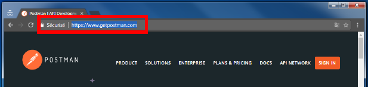
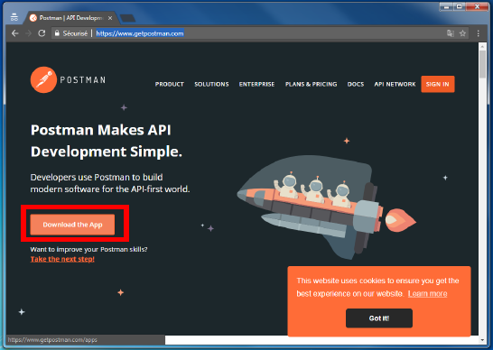
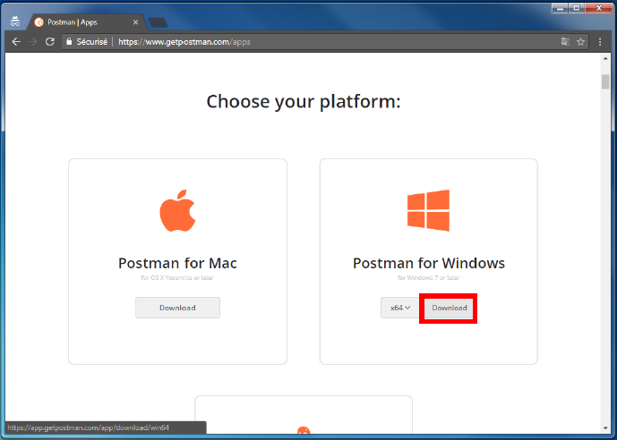
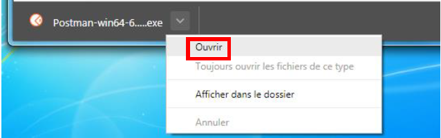
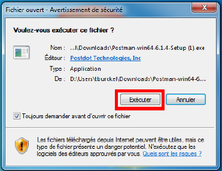

Download Postman
- Open a web browser, like Google Chrome or Firefoxe
- In the URL bar, type
https://www.getpostman.comand push "ENTER"

- Click on "Download the App"

- Select your platform (in this exemple it's Windows) and click on "Download"

Installation
- When the download is done, click on "Open"

then "Execute" and finish your setup as you want.
